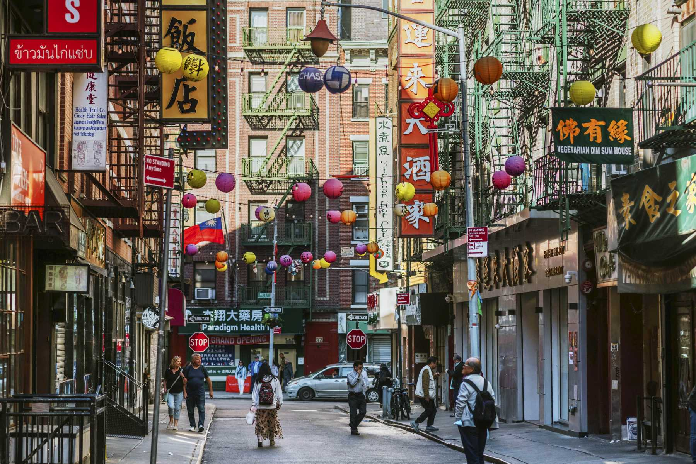

Strolling down the streets of Lower Manhattan, you’ll find a vibrant community known as Chinatown. You will always encounter a judgmental Chinese grandma who will approach you on how to dress appropriately. At the same time, some fluent Mandarin speaking white strangers invite you to their church, and an abundance of Chinese women haggling with shopkeepers for better prices. Down on Mott Street, there are always numerous food carts offering a wide variety of options. Although they may not make much or be very profitable, ongoing community support helps these small carts remain open. These scenes serve a purpose, as they capture the distinctiveness of Chinatown, where generations of Chinese families and cultures coexist.
In the late 1800s, the Chinese Exclusion Act prevented Chinese immigrants from participating in mainstream American society. Thus, the development of Chinatown was purely built on the Chinese immigrant community’s unity in New York to construct a peaceful loving community to revolt against the ongoing racism and discrimination.
Chinatown nowadays is constantly being gentrified and experiencing extreme change. I still remember those little barber shops that always gave cheap haircuts, those bubble tea shops that existed before bubble tea became an overly trendy drink, and those small restaurants that served food for reasonable prices that reminded Chinese immigrants of home. But now, Chinatown has become nothing more than a tourist attraction, it loses its meaning as time passes. Some places are disappearing, replaced by fancy upscale cafes, luxury apartments, and boutiques that are specifically designed to attract tourists and wealthier newcomers rather than the people who originally built this small town. Many grandmas who live in Chinatown tell me that it is a struggle trying to survive in this economy. It is sickening that they aren’t experiencing the freedom of hard labor at such an old age, but the constant change in Chinatown is making it harder for them to hold on to what they have known for so long.
Once COVID-19 hit New York City, Chinatown became a huge fear factor for many because of how the media misconceived the spread of the virus. This misconception of the virus originating from China was completely untrue. Eventually, this led to the skyrocketing cases of Asian Hate Crimes being at an all-time peak during the quarantine era. I still remember this exact moment when my mother was extremely terrified to even step foot outside without having the constant fear of being attacked because she was Chinese. Racism against the AAPI community during that time reached an unprecedented level. Chinatown was once a hustling safe haven for the Asian community and became an unexpected ghost town that no one dared to set foot in. Businesses that had survived for decades were closing their doors because of the lack of customers and the overwhelming stigma of anything being associated with being “Chinese.”
It was honestly so heart-wrenching to witness my favorite go-to spots vanish before saying goodbye. These were places that made up one child's core childhood memories, but now they were replaced by the unwelcoming silence and cheaply boarded-up windows. Eventually, these children will grow up and realize that their meaning of Chinatown has long been lost. Instead, it will be a long-distant memory that will never be the same, constantly being overshadowed by the Western attractions that dominate the neighborhood.
As Chinatown changes, many fail to recognize what living here truly means. Beyond the vibrant and classy image portrayed by social media, it often fails to capture the other part of the neighborhood. The other part was once a place of refuge for Chinese immigrants, who united to construct it through sheer hardship and resilience. However, it is now reduced to trending spots for Instagram photos and tourist attractions. Tourists today rarely pay attention to family-owned businesses in Chinatown that sell “weird and exotic” foods; instead, they focus on high-end, upscale restaurants that do not align with Asian culture. For me, Chinatown is more than just a tourist attraction but is a place where my original journey began. A little Chinese boy walking down the streets of Chinatown with his mother, exploring many shops, enjoying the food, and breathing in the rich aroma, utterly unaware that this will be the last time he will ever experience this.